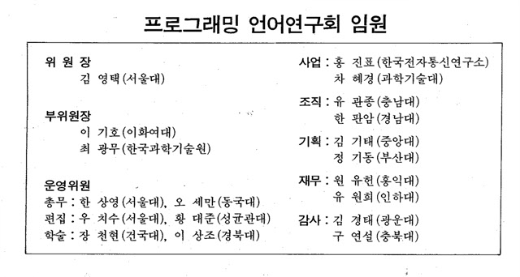
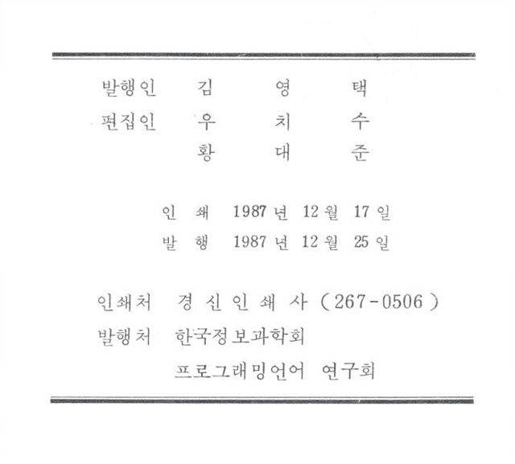

프로그래밍언어연구회지 제1권 제2호 (1987년 12월)
권두언:
김영택
특별기고
VHDL(VHSIC Hardware Description Language)
원유헌(홍익대)
ETRI/CHILL Compiling System
이동길, 박성원, 서진석, 박경숙, 정영식, 조철회, 홍진표 (한국전자통신연구소)
연구실소개
한국전자통신연구소 개발 환경연구실
홍진표(한국전자통신연구소)
경과보고

프로그래밍언어 연구회